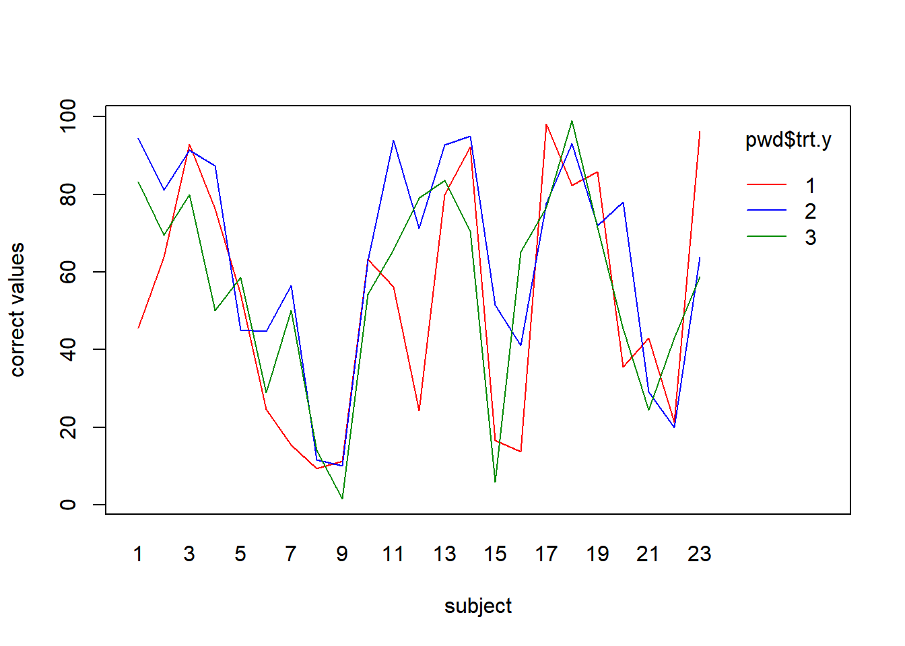
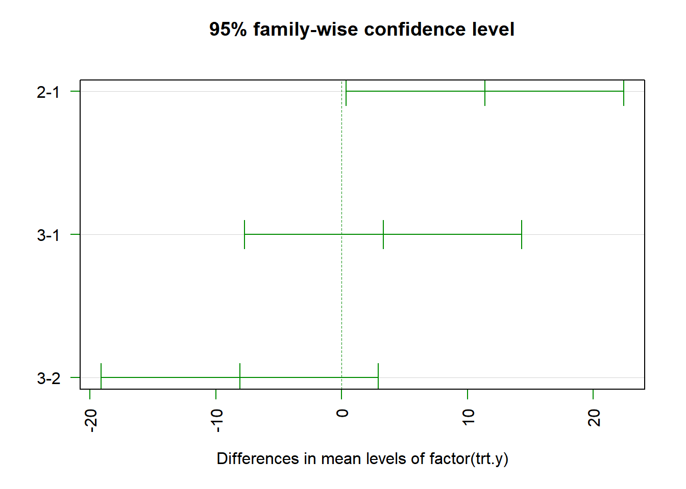
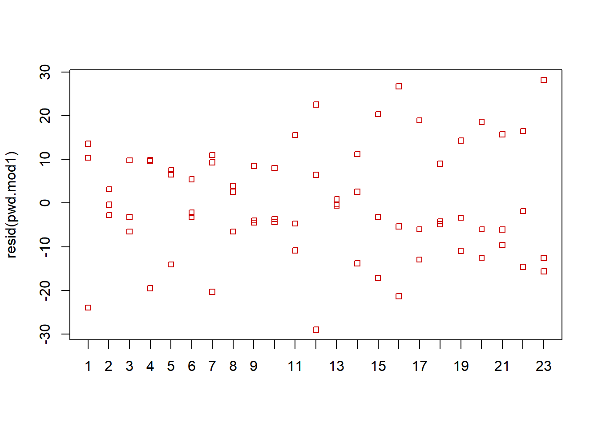
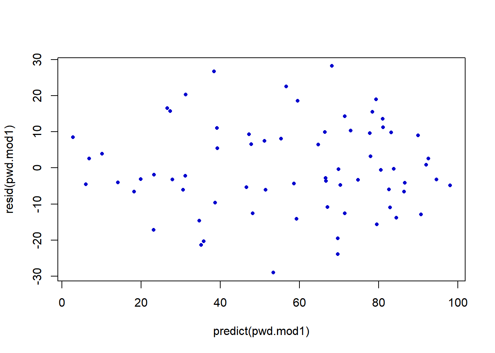
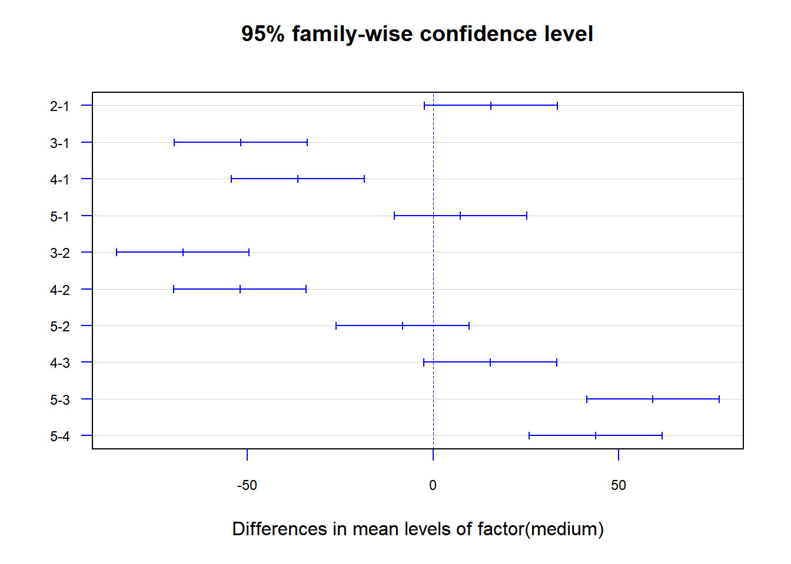

Chapter 10 Block Designs
In many experimental settings, it is possible to group experimental units into homogeneous groups or blocks, allowing each treatment to be assigned to individual units within each block. It is often possible to evaluate each treatment on the same individual unit or subject. The goal is to remove block-to-block variation and obtain more powerful tests for treatment effects. When individual units receive each treatment (preferably in random order), these are often referred to as Repeated Measures.
In other situations, it may be necessary to block on two or three factors to obtain better precision for studying treatment effects. These designs are Latin Squares for two blocking factors and Graeco-Latin Squares for three blocking factors. In many situations, these designs are used to obtain “fair” comparisons of treatments, even if the factors are not concluded in the analysis. This helps remove biases that can occur in the implementation of the experiment, particularly when individual subjects receive each treatment.
Some examples containing a single blocking factor are given below.
- Agriculture - An experiment to compare \(r\) varieties of fertilizer is conducted on \(b\) blocks of land. Within each block, \(r\) plots are obtained and one variety of fertilizer is applied to each plot.
- Industrial - An experiment to compare \(r\) methods (or machines) to manufacture a product is conducted on \(b\) batches of raw material. Each batch is broken into \(r\) sub-batches and each treatment is applied to one sub-batch within the batch.
- Pharmaceutical - An experiment is conducted to compare bioavailability among \(r\) formulations of a drug product, by having each product measured on \(b\) subjects. Subjects are given a particular sequence, and availability is measured for each formulation.
In many cases, blocks are simply individual replications of an experiment on different days or at different locations. In other cases, individuals may be ordered based on an external measurement (e.g. severity, ability) and blocks may be formed by that criteria and the various treatments may be assigned to the group of individuals within these blocks.
Block designs can have a single treatment factor or combinations of multiple treatment factors. The larger the number of treatment levels, the less homogeneous will be the units within a block. In these cases Incomplete Block Designs can be utilized.
So far, when considering treatment factors, we have implicitly treated them as fixed factors, the levels observed in the experiment being the specific treatments of interest to researchers. In block designs, the blocks are very often random factors, representing a sample of all levels that could have been selected. These include: plots of land, batches of raw material, subjects in bioequivalence studies, and in virtually all repeated measures settings. The primary goal in all of these experiments is to compare the treatment effects as we have done in previous chapters. Fortunately, the \(F\)-test and methods for making contrasts among treatments are the same whether blocks are fixed or random.
10.1 Randomized Block and Repeated Measures Designs
In this section we introduce the model for the Randomized Complete Block Design. This same model is used for the Repeated Measures Design, when each subject receives each treatment. This is not the same as another type of Repeated Measures Design, where each subject receives only one treatment, but is measured longitudinally at multiple time points.
For this model, each of \(r\) treatments are observed, once within each of \(b\) blocks or subjects, for a total of \(n_T=rb\) observations. For this model, when treatments are applied to subjects in some time order, we are assuming there are no order or carryover effects. More complex designs can be used when this is the case. In this section, we will use blocks and subjects interchangeably. In virtually all cases, subjects are treated as random, except in settings where the only subjects of interest are included in the experiment.
Note: This notation is NOT consistent with Kutner, et al.
10.1.1 Model Structure and Estimators
\[ Y_{ij} = \mu_{\bullet\bullet} + \tau_i + \beta_j + \epsilon_{ij} \qquad i=1,\ldots,r; \quad j=1,\ldots,b \qquad \epsilon_{ij} \sim NID\left(0,\sigma^2\right) \]
We assume fixed treatment effects as before, and allow for either fixed or random block effects.
\[ \mbox{Overall Mean:} \quad \mu_{\bullet\bullet} \qquad \qquad \hat{\mu}_{\bullet\bullet} = \frac{\sum_{i=1}^r\sum_{j=1}^bY_{ij}}{rb} = \overline{Y}_{\bullet\bullet} \] \[ \mbox{Treatment Effects:} \quad \tau_i = \mu_{i\bullet}-\mu_{\bullet\bullet} \qquad \hat{\tau}_i = \overline{Y}_{i\bullet} - \overline{Y}_{\bullet\bullet} \qquad \sum_{i=1}^r\tau_i=\sum_{i=1}^r\hat{\tau}_i=0 \]
We consider the block effects separately, considering the fixed and random effects cases.
\[ \mbox{Fixed Blocks:} \quad \beta_j=\mu_{\bullet j}-\mu_{\bullet\bullet} \qquad \hat{\beta}_j = \overline{Y}_{\bullet j} - \overline{Y}_{\bullet\bullet} \qquad \sum_{j=1}^b\beta_j=\sum_{j=1}^b\hat{\beta}_j=0 \] For the fixed block case, we obtain the following model for \(Y_{ij}\) and the treatment means \(\overline{Y}_{i\bullet}\).
\[ E\left\{Y_{ij}\right\} =\mu_{\bullet\bullet} + \tau_i + \beta_j \qquad V\left\{Y_{ij}\right\} = \sigma^2\qquad \mbox{COV}\left\{Y_{ij},Y_{i'j'}\right\}=0 \quad \forall i\ne i',j\ne j' \] \[ E\left\{\overline{Y}_{i\bullet}\right\}= E\left\{\frac{1}{b}\sum_{j=1}^bY_{ij}\right\}= \frac{1}{b}\sum_{j=1}^b E\left\{Y_{ij}\right\}= \frac{1}{b}\sum_{j=1}^b\left(\mu_{\bullet\bullet} + \tau_i + \beta_j\right)= \mu_{\bullet\bullet} + \tau_i \] \[ V\left\{\overline{Y}_{i\bullet}\right\}= V\left\{\frac{1}{b}\sum_{j=1}^bY_{ij}\right\}= \frac{1}{b^2}\sum_{j=1}^b V\left\{Y_{ij}\right\}= \frac{1}{b^2}\sum_{j=1}^b\sigma^2=\frac{\sigma^2}{b} \]
\[ \mbox{Random Blocks:} \quad \beta_j \sim NID\left(0,\sigma_{\beta}^2\right) \qquad \mbox{COV}\left\{\beta_j,\epsilon_{ij}\right\}=0 \qquad \hat{\beta}_j = \overline{Y}_{\bullet j} - \overline{Y}_{\bullet\bullet} \qquad \sum_{j=1}^b\hat{\beta}_j=0 \] For the random block case, we obtain the following model for \(Y_{ij}\) and the treatment means \(\overline{Y}_{i\bullet}\).
The random block effects and the random errors are assumed independent. By the structure of the estimators the estimated \(\beta_j\) sum to zero, but it’s the population of \(\beta_j\) that has mean 0. For the random block case, we obtain the following model for \(Y_{ij}\).
\[ E\left\{Y_{ij}\right\} =\mu_{\bullet\bullet} + \tau_i \qquad V\left\{Y_{ij}\right\} = \sigma_{\beta}^2 + \sigma^2 \qquad \mbox{COV}\left\{Y_{ij},Y_{i'j'}\right\}= \left\{ \begin{array}{r@{\quad:\quad}l} \sigma_{\beta}^2+\sigma^2 & i=i',j=j' \\ \sigma_{\beta}^2 & i\ne i',j=j' \\ 0 & \forall i,i', j\ne j' \end{array} \right. \]
Two measurements (for different treatments) within the same block are correlated. Measurements across different blocks are independent.
\[ E\left\{Y_{ij}\right\} =\mu_{\bullet\bullet} + \tau_i \qquad V\left\{Y_{ij}\right\} = \sigma_{\beta}^2+\sigma^2\qquad \mbox{COV}\left\{Y_{ij},Y_{i'j}\right\}=\sigma_{\beta}^2 \quad \forall i\ne i' \]
\[ E\left\{\overline{Y}_{i\bullet}\right\}= E\left\{\frac{1}{b}\sum_{j=1}^bY_{ij}\right\}= \frac{1}{b}\sum_{j=1}^b E\left\{Y_{ij}\right\}= \frac{1}{b}\sum_{j=1}^b\left(\mu_{\bullet\bullet} + \tau_i\right)= \mu_{\bullet\bullet} + \tau_i \] \[ V\left\{\overline{Y}_{i\bullet}\right\}= V\left\{\frac{1}{b}\sum_{j=1}^bY_{ij}\right\}= \frac{1}{b^2}\sum_{j=1}^b V\left\{Y_{ij}\right\} = \frac{1}{b^2}\sum_{j=1}^b\left[\sigma_{\beta}^2+\sigma^2\right]=\frac{\sigma_{\beta}^2+\sigma^2}{b} \] The Covariance of two different treatment means \(\overline{Y}_{i\bullet}\) and \(\overline{Y}_{i'\bullet}\) is obtained below. \[ \mbox{COV}\left\{\overline{Y}_{i\bullet},\overline{Y}_{i'\bullet}\right\}= \mbox{COV}\left\{\frac{1}{b}\sum_{j=1}^bY_{ij},\frac{1}{b}\sum_{j=1}^bY_{i'j}\right\}= \frac{1}{b^2}\mbox{COV}\left\{Y_{i1}+\cdots Y_{ib},Y_{i'1}+\cdots +Y_{i'b}\right\}= \]
\[=\frac{1}{b^2}\left[b\sigma_{\beta}^2+b(b-1)(0)\right]= \frac{\sigma_{\beta}^2}{b} \] The fitted values and residuals are similar to other models described previously.
\[ \hat{Y}_{ij} = \hat{\mu}_{\bullet\bullet} + \hat{\tau}_i + \hat{\beta_j} = \overline{Y}_{i\bullet} + \overline{Y}_{\bullet j} - \overline{Y}_{\bullet\bullet} \qquad e_{ij} = Y_{ij}-\hat{Y}_{ij} = Y_{ij}-\overline{Y}_{i\bullet} - \overline{Y}_{\bullet j} + \overline{Y}_{\bullet\bullet} \]
Before setting up the Analysis of Variance, we state the mean and variance structure for the treatment means for fixed and random blocks. In each case \(E\left\{\overline{Y}_{i\bullet}\right\} = \mu+\tau_i\).
\[ \mbox{Fixed Blocks:} \quad V\left\{\overline{Y}_{i\bullet}\right\}=\frac{\sigma^2}{b} \qquad i\ne i': \quad \mbox{COV}\left\{\overline{Y}_{i\bullet},\overline{Y}_{i'\bullet}\right\}=0 \qquad V\left\{\overline{Y}_{i\bullet}-\overline{Y}_{i'\bullet}\right\}=\frac{2\sigma^2}{b} \]
\[ \mbox{Random Blocks:} \quad V\left\{\overline{Y}_{i\bullet}\right\}=\frac{\sigma_{\beta}^2+\sigma^2}{b} \qquad i\ne i': \quad \mbox{COV}\left\{\overline{Y}_{i\bullet},\overline{Y}_{i'\bullet}\right\}= \frac{\sigma_{\beta}^2}{b}\]
\[ V\left\{\overline{Y}_{i\bullet}-\overline{Y}_{i'\bullet}\right\}= 2\left(\frac{\sigma_{\beta}^2+\sigma^2}{b}\right)-2\left(\frac{\sigma_{\beta}^2}{b}\right)= \frac{2\sigma^2}{b} \]
Thus, while the variances of the treatment means differ depending on whether blocks are fixed or random, the variances of the difference in the treatment means are the same.
Example 10.1 - Sensory Analysis of Soy Sauce Recipes
A study compared \(r=4\) soy sauce recipes, each judged by a panel of \(b=8\) trained raters (Fidaleo et al. 2012). The \(r=4\) soy sauce recipes are given below, this being treated as a fixed factor (only recipes of interest).
- Recipe 1 - Original Soy Sauce
- Recipe 2 - Electrodialyzed desalted Soy Sauce
- Recipe 3 - Recipe 1 diluted at electric conductivity = 2.3 S/m
- Recipe 4 - Recipe 2 re-salted to original level
In sensory studies such as this, there is a debate among researchers whether raters (blocks) should be treated as a fixed or random factor.
- Fixed Blocks - These are the only raters of interest to the researchers (possibly the only raters employed by this company).
- Random Blocks - The researchers are interested in generalizing these findings to a population of trained raters (these 8 raters being a sample from that population).
Based on the sample values reported in this paper, we will construct population models for the fixed and random blocks cases. These were ratings on a 4-point scale (all numbers have been multiplied by 10 to keep variances from being so small). The response these are based on was appearance/color. Parameter values used are given here.
\[ \mu_{\bullet\bullet}=32 \qquad \tau_1=4 \quad \tau_2=3 \quad \tau_3=-13 \quad \tau_4=6 \qquad \sigma^2=11.56 \quad \sigma = 3.4 \] \[ \mbox{Fixed Blocks:} \quad \beta_1,\ldots, \beta_8 = \mbox{ -5.30 to 5.30 by 1.514} \qquad \mbox{Random Blocks:} \quad \sigma_{\beta}^2=13.76 \quad \sigma_{\beta}=3.71 \] The variance among block effects was chosen so that the following equality holds. This makes the models comparable with respect to variability in the block effects (see \(E\{MSBL\}\) in the next sub-section). \[ \sigma_{\beta}^2 = \frac{\sum_{j=1}^8\beta_j^2}{8-1}=\frac{(-5.300)^2+\cdots+(5.300)^2}{7}=13.76 \] We will generate 100000 samples from this model (one for fixed block effects, one for random block effects). The algorithms are described here.
Fixed Effects
- Generate \(n_T=rb=4(8)\) pseudo \(\epsilon_{11}, \ldots , \epsilon_{48} \sim NID\left(0,3.4^2\right)\)
- Assign \(Y_{ij}^F=\mu_{\bullet\bullet} + \tau_i + \beta_j^F + \epsilon_{ij} \qquad i=1,\ldots,4; \quad j=1,\ldots,8\)
- Compute and save \(\overline{Y}_{1\bullet}^F,\ldots,\overline{Y}_{4\bullet}^F\)
- Obtain (across samples) the mean and variance of \(\overline{Y}_{1\bullet}^F,\ldots,\overline{Y}_{4\bullet}^F\)
- Obtain (across samples) the mean and variance of the differences among \(\overline{Y}_{1\bullet}^F,\ldots,\overline{Y}_{4\bullet}^F\)
Random Effects
- Generate \(n_T=rb=4(8)\) pseudo \(\epsilon_{11}, \ldots , \epsilon_{48} \sim NID\left(0,3.4^2\right)\)
- Generate \(b=8\) pseudo \(\beta_1^R,\ldots , \beta_8^R \sim NID\left(0,3.71^2\right)\)
- Assign \(Y_{ij}^R=\mu_{\bullet\bullet} + \tau_i + \beta_j^R + \epsilon_{ij} \qquad i=1,\ldots,4; \quad j=1,\ldots,8\)
- Compute and save \(\overline{Y}_{1\bullet}^R,\ldots,\overline{Y}_{4\bullet}^R\)
- Obtain (across samples) the mean and variance of \(\overline{Y}_{1\bullet}^R,\ldots,\overline{Y}_{4\bullet}^R\)
- Obtain (across samples) the mean and variance of the differences among \(\overline{Y}_{1\bullet}^R,\ldots,\overline{Y}_{4\bullet}^R\)
For each model (fixed and random blocks), the theoretical means for the recipe means and for differences among the means are given below.
\[ E\{\overline{Y}_{i\bullet}\}=\mu_i=\mu_{\bullet\bullet}+ \tau_i \qquad E\{\overline{Y}_{i\bullet}-\overline{Y}_{i'\bullet}\}= \mu_i-\mu_{i'} = \tau_i - \tau_{i'} \] For fixed block effects, the theoretical variances of the recipe means and of the differences among the means are given below.
\[ \sigma^2\{\overline{Y}_{i\bullet}\}=\frac{\sigma^2}{b}=\frac{11.56}{8}=1.445 \qquad \sigma^2\{\overline{Y}_{i\bullet}-\overline{Y}_{i'\bullet}\}= \frac{2\sigma^2}{b}=\frac{2(11.56)}{8}=2.90 \] For random block effects, the theoretical variances of the recipe means and of the differences among the means are given below.
\[ \sigma^2\{\overline{Y}_{i\bullet}\}=\frac{\sigma_{\beta}^2+\sigma^2}{b}=\frac{13.76+11.56}{8}=3.165 \qquad \sigma^2\{\overline{Y}_{i\bullet}-\overline{Y}_{i'\bullet}\}= \frac{2\sigma^2}{b}=\frac{2(11.56)}{8}=2.90 \]
## [1] -5.3000000 -3.7857143 -2.2714286 -0.7571429 0.7571429 2.2714286 3.7857143
## [8] 5.3000000## [1] 13.75837## [1] 3.709227## Mean(Fixed) Mean(Random) Var(Fixed) Var(Random)
## Ybar1 36.006 36.006 1.438 3.167
## Ybar2 34.998 34.997 1.439 3.154
## Ybar3 19.001 19.001 1.441 3.148
## Ybar4 37.997 37.997 1.446 3.157
## Ybar2-Ybar1 -1.009 -1.009 2.867 2.867
## Ybar3-Ybar1 -17.005 -17.005 2.892 2.892
## Ybar3-Ybar2 -15.997 -15.997 2.888 2.888
## Ybar4-Ybar1 1.990 1.990 2.878 2.878
## Ybar4-Ybar2 2.999 2.999 2.874 2.874
## Ybar4-Ybar3 18.996 18.996 2.889 2.889All of the empirical results are very close to the theoretical results (as they should be). The difference arises when considering \(V\left\{\overline{Y}_{i\bullet}\right\}\) when block effects are generated as fixed effects versus when they are generated as random effects.
\[\nabla\]
10.2 Analysis of Variance and the \(F\)-test
We use the sums of squares as previously set up, with the Sum of Squares Error \(SSE\), technically being the Sum of Squares for the Treatment by Block Interaction as there is only one replicate per combination of Treatment and Block. The sums of squares, degrees of freedom, and expected mean squares are given here. In this model, we assume that there is no Treatment/Block interaction. Tukey’s One-Degree of Freedom Test for Non-Additivity can be used to check this assumption.
\[ \mbox{Total:} \quad SSTO = \sum_{i=1}^r\sum_{j=1}^b \left(Y_{ij}-\overline{Y}_{\bullet\bullet}\right)^2 \qquad \qquad df_{TO}=rb-1 \] \[ \mbox{Treatments:} \quad SSTR = b\sum_{i=1}^r \left(Y_{i\bullet}-\overline{Y}_{\bullet\bullet}\right)^2 \qquad \qquad df_{TR}=r-1 \] \[ E\left\{MSTR\right\}= \sigma^2+\frac{b\sum_{i=1}^r\tau_i^2}{r-1} \]
\[ \mbox{Blocks:} \quad SSBL = r\sum_{j=1}^b \left(Y_{\bullet j}-\overline{Y}_{\bullet\bullet}\right)^2 \qquad \qquad df_{BL}=b-1 \] \[ \mbox{Fixed Blocks:} \quad E\left\{MSBL\right\}= \sigma^2+\frac{r\sum_{j=1}^b\beta_j^2}{b-1} \qquad \mbox{Random Blocks:} \quad E\left\{MSBL\right\}= \sigma^2+ r\sigma_{\beta}^2 \]
\[ \mbox{Error (TRxBL):} \quad SSE = \sum_{i=1}^a\sum_{j=1}^b\left(Y_{ij}-\overline{Y}_{i\bullet} - \overline{Y}_{\bullet j} + \overline{Y}_{\bullet\bullet}\right)^2 \] \[df_E=(r-1)(b-1) \qquad E\left\{MSE\right\}= \sigma^2 \]
To test for treatment effects, we compute the ratio of \(MSTR\) to \(MSE\) with the \(F\)-test. Software will automatically compute the \(F\)-statistic for blocks as well, but the primary interest is typically treatment effects. However, when blocks are random it may be of interest to estimate \(\sigma_{\beta}^2\), the variance of the block effects.
\[ H_0: \tau_1=\ldots = \tau_r=0 \qquad TS: F_{TR}^*=\frac{MSTR}{MSE} \qquad RR: F_{TR}^* \ge F_{1-\alpha;r-1,(r-1)(b-1)} \]
Any contrasts or pairwise comparisons can be carried out as in the Completely Randomized Design. For Tukey’s HSD for all possible comparisons, we compute HSD, which will be the same for all pairs \(\left(n_i=b\right)\) and can obtain simultaneous \((1-\alpha)100\%\) Confidence Intervals for \(\tau_i - \tau_{i`}\) as follows.
\[ HSD = q_{1-\alpha;r,(r-1)(b-1)}\sqrt{\frac{MSE}{b}} \] \[ (1-\alpha)100\% \mbox{ CI for } \tau_i-\tau_{i'}: \qquad \left(\overline{Y}_{i\bullet}-\overline{Y}_{i'\bullet}\right) \pm HSD \]
Example 10.2 - Methods of Presenting Weather Information to Pilots
A study compared \(r=3\) cockpit weather displays (treatments) for pilots in terms of information recall (O’Hare and Stenhouse 2009) There were \(b=23\) pilots (blocks) who were exposed to each display on a flight simulator. The three displays are described below. The response \(Y\), is the percent of information correctly recalled by the pilot.
- Ordinary text - English phrases \((i=1)\)
- Redesigned graphical display \((i=2)\)
- Old graphical display \((i=3)\)
Using R, we will set up the Analysis of Variance directly, then use the aov function along with TukeyHSD function to confirm results.
## trt.y blk.y corrRecall
## 1 1 1 45.68415
## 2 1 2 63.76311
## 3 1 3 92.90009interaction.plot(pwd$blk.y, pwd$trt.y, pwd$corrRecall,
col=c("red", "blue", "green4"), lty=c(1,1,1),
xlab="subject", ylab="correct values")
## Direct calculations
all.mean <- mean(pwd$corrRecall)
trt.mean <- as.vector(tapply(pwd$corrRecall, pwd$trt.y, mean))
blk.mean <- as.vector(tapply(pwd$corrRecall, pwd$blk.y, mean))
r <- length(trt.mean)
b <- length(blk.mean)
SSTO <- sum((pwd$corrRecall - all.mean)^2); df_TO <- r*b-1
SSTR <- b*sum((trt.mean-all.mean)^2); df_TR <- r-1
MSTR <- SSTR / df_TR
SSBL <- r*sum((blk.mean-all.mean)^2); df_BL <- b-1
MSBL <- SSBL / df_BL
SSE <- SSTO - SSTR - SSBL; df_E <- df_TO - df_TR - df_BL
MSE <- SSE / df_E
Fstar = MSTR / MSE
aov.out1 <- cbind(df_TR, SSTR, MSTR, Fstar, qf(.95,df_TR, df_E),
1-pf(Fstar,df_TR, df_E))
aov.out2 <- cbind(df_BL, SSBL, MSBL, MSBL/MSE, df(.95,df_BL,df_E),
1-pf(MSBL/MSE, df_BL, df_E))
aov.out3 <- cbind(df_E, SSE, MSE, NA, NA, NA)
aov.out4 <- cbind(df_TO, SSTO, NA, NA, NA, NA)
aov.out <- rbind(aov.out1, aov.out2, aov.out3, aov.out4)
colnames(aov.out) <- c("df", "SS", "MS", "F*", "F(.95)", "P(>F*)")
rownames(aov.out) <- c("Treatments", "Blocks", "Error", "Total")
round(aov.out,4)## df SS MS F* F(.95) P(>F*)
## Treatments 2 1582.86 791.4300 3.3300 3.2093 0.045
## Blocks 22 42814.57 1946.1167 8.1884 1.1164 0.000
## Error 44 10457.33 237.6667 NA NA NA
## Total 68 54854.76 NA NA NA NAHSD <- qtukey(.95, r, df_E) * sqrt(MSE/b)
Tukey.out <- matrix(rep(0,10*r*(r-1)/2),ncol=10)
row.count <- 0
for (i1 in 2:r) {
for (i2 in 1:(i1-1)) {
row.count <- row.count + 1
Tukey.out[row.count,1] <- i1
Tukey.out[row.count,2] <- i2
Tukey.out[row.count,3] <- trt.mean[i1]
Tukey.out[row.count,4] <- trt.mean[i2]
Tukey.out[row.count,5] <- trt.mean[i1] - trt.mean[i2]
Tukey.out[row.count,6] <- sqrt(2*MSE/b)
Tukey.out[row.count,7] <- HSD
Tukey.out[row.count,8] <- Tukey.out[row.count,5] - HSD
Tukey.out[row.count,9] <- Tukey.out[row.count,5] + HSD
Tukey.out[row.count,10] <-
1-ptukey(abs(Tukey.out[row.count,5])/sqrt(MSE/b),r,df_E)
}
}
colnames(Tukey.out) <- c("i", "i'", "ybar_i", "ybar_i'", "diff", "Std Err", "HSD",
"LB", "UB", "p adj")
round(Tukey.out,4)## i i' ybar_i ybar_i' diff Std Err HSD LB UB p adj
## [1,] 2 1 63.7 52.3 11.4 4.5461 11.0264 0.3736 22.4264 0.0413
## [2,] 3 1 55.6 52.3 3.3 4.5461 11.0264 -7.7264 14.3264 0.7495
## [3,] 3 2 55.6 63.7 -8.1 4.5461 11.0264 -19.1264 2.9264 0.1875## Using aov and TukeyHSD
pwd.mod1 <- aov(corrRecall ~ factor(trt.y) + factor(blk.y), data=pwd)
anova(pwd.mod1)## Analysis of Variance Table
##
## Response: corrRecall
## Df Sum Sq Mean Sq F value Pr(>F)
## factor(trt.y) 2 1583 791.43 3.3300 0.04501 *
## factor(blk.y) 22 42815 1946.12 8.1884 2.253e-09 ***
## Residuals 44 10457 237.67
## ---
## Signif. codes: 0 '***' 0.001 '**' 0.01 '*' 0.05 '.' 0.1 ' ' 1## Tukey multiple comparisons of means
## 95% family-wise confidence level
##
## Fit: aov(formula = corrRecall ~ factor(trt.y) + factor(blk.y), data = pwd)
##
## $`factor(trt.y)`
## diff lwr upr p adj
## 2-1 11.4 0.3736119 22.426388 0.0413298
## 3-1 3.3 -7.7263883 14.326388 0.7495471
## 3-2 -8.1 -19.1263883 2.926388 0.1874886
Thus, there are differences among the three cockpit weather displays. In particular, pilots had higher recall with the redesigned graphical display \((i=2)\) than the ordinary text display \((i=1)\).\[\nabla\]
10.2.1 Checking Model Assumptions
Some methods for checking model assumptions are given in this sub-section, involving the error terms for the model.
- Stripchart of residuals versus blocks to visually observe whether the variance of errors is constant across blocks (each block received each treatment)
- Plots of residuals versus fitted values to observe whether residual variance is related to mean
- Plot of residuals versus time order when experiment is conducted sequentially or when blocks are days to observe whether serial correlation is present
- Block x Treatment Interactions - Can be tested using Tukey’s ODOFNA test. If significant, the remainder \(MSE^*\) can be used after removing the 1 degree of freedom \(SS\) for interaction
Example 10.3 - Methods of Presenting Weather Information to Pilots
Here we give examples of the model checks, with the exception of residuals versus time order, as that does not pertain to this study.
## trt.y blk.y corrRecall
## 1 1 1 45.68415
## 2 1 2 63.76311
## 3 1 3 92.90009

##
## Tukey test on 5% alpha-level:
##
## Test statistic: 0.05092
## Critival value: 4.067
## The additivity hypothesis cannot be rejected.While a few blocks (pilots) have little spread in his/her residuals based on the stripchart, the spread is reasonably equal across the \(b=23\) pilots. Plus, there are only \(r=3\) residuals per pilot.
The plot of the residuals versus predicted values does not show any evidence of “funneling” out as the fitted values increase, so constant variance seems reasonable.
Tukey’s ODOFNA test gives a very small test statistic, well below its critical value. This provides no evidence of an interaction between treatment (display of weather information) and block (pilot).
\[\nabla\]
10.2.2 Relative Efficiency and Within-Subject Variance-Covariance Matrix
In this sub-section, we consider two measures that come up in Randomized Block and Repeated Measures Designs.
- Relative Efficiency - A measure of the ratio of the error variance of the Completely Randomized Design (CRD) to the Randomized Block Design (RBD)
- Within Subject Variance-Covariance Matrix - When blocks/subjects are random, the measurements within subjects are correlated. The assumptions are of equal variances for the \(r\) treatments and equal covariances among the \(r(r-1)/2\) pairs of treatments.
For Relative Efficiency, we label \(\sigma_{CRD}^2\) to be the error variance for a model based on a Completely Randomized Design and \(\sigma_{RBD}^2\) the error variance for the Randomized Block Design. Recall that the goal of the RBD is to reduce the error variance, thus making more precise estimates of contrasts (smaller standard errors).
We define the following ratios in terms of true (unknown) variances and estimated variances from the RBD.
\[ E=\frac{\sigma_{CRD}^2}{\sigma_{RBD}^2} \qquad \qquad \hat{E}=\frac{s_{CRD}^2}{s_{RBD}^2} = \frac{(b-1)MSBL+b(r-1)MSE}{(br-1)MSE} \] Note that \((b-1)+b(r-1)=br-1\), so that \(\hat{E}\) is a weighted average of \(MSBL/MSE\) and 1. The larger the ratio of \(MSBL/MSE\), the larger will be \(\hat{E}\). Then, experiments with large variability among blocks relative to error variability are more efficient.
The Relative Efficiency measures the multiple of the number of blocks from the RBD that would need to be the treatment sample size in a CRD to have comparable standard errors for contrasts.
Suppose that an experiment run as a RBD had \(b=5\) blocks had a Relative Efficiency of \(\hat{E}=2\). Then an experiment run as a CRD would need \(n=2(5)=10\) units per treatments to have comparable standard errors for treatment contrasts.
Some authors describe a degrees of freedom adjustment for the estimated Relative Efficiency. In many cases, it makes little difference, the formula is given below, with \(r\) being the number of treatments and \(b\) being the number of blocks.
\[ df_{CRD}=r(b-1) \quad df_{RBD}=(r-1)(b-1) \qquad \hat{E}^*= \frac{\left(df_{RBD}+1\right)\left(df_{CRD}+3\right)} {\left(df_{RBD}+3\right)\left(df_{CRD}+1\right)} \hat{E} \]
When blocks/subjects are random, then the responses \(Y\) within blocks are correlated as described at the beginning of the chapter.
\[ V\left\{Y_{ij}\right\}=\sigma_{\beta}^2+\sigma^2 = \sigma_i^2 \qquad\qquad i\ne i': \quad \mbox{COV}\left\{Y_{ij},Y_{i'j}\right\}=\sigma_{\beta}^2=\sigma_{ii'} \]
For this model to be appropriate we need the following assumptions.
\[ \sigma_1^2=\cdots =\sigma_r^2 \qquad \sigma_{12}=\cdots =\sigma_{r-1,r} \] In matrix form, the within-subject Variance-Covariance matrix can be written as follows, with a similar set of assumptions.
\[ \Sigma = \begin{bmatrix} \sigma_1^2 & \sigma_{12} & \cdots & \sigma_{1r} \\ \sigma_{21} & \sigma_2^2 & \cdots & \sigma_{2r} \\ \vdots & \vdots & \ddots & \vdots \\ \sigma_{r1} & \sigma_{r2} & \cdots & \sigma_r^2 \\ \end{bmatrix} = \begin{bmatrix} \sigma^2 & \sigma_{ii'} & \cdots & \sigma_{ii'} \\ \sigma_{ii'} & \sigma^2 & \cdots & \sigma_{ii'} \\ \vdots & \vdots & \ddots & \vdots \\ \sigma_{ii'} & \sigma_{ii'} & \cdots & \sigma^2 \\ \end{bmatrix} \] The sample version of the Variance-Covariance matrix is computed as follows.
\[ S = \begin{bmatrix} s_1^2 & s_{12} & \cdots & s_{1r} \\ s_{21} & s_2^2 & \cdots & s_{2r} \\ \vdots & \vdots & \ddots & \vdots \\ s_{r1} & s_{r2} & \cdots & s_r^2 \\ \end{bmatrix} \] \[ s_i^2 = \frac{\sum_{j=1}^b\left(Y_{ij}-\overline{Y}_{i\bullet}\right)^2}{b-1} \qquad s_{ii'} = \frac{\sum_{j=1}^b\left(Y_{ij}-\overline{Y}_{i\bullet}\right) \left(Y_{i'j}-\overline{Y}_{i'\bullet}\right)}{b-1} \] There are tests of whether the Population Variance-Covariance meets this assumption based on the Sample Variance-Covariance matrix, but are beyond the scope of this course. A visual inspection of \(S\) should be able to detect large discrepancies. Other structures (including an unstructured form) can be implemented using mixed model software packages. Also, transformations on \(Y\) can be implemented (such as the Box-Cox transformation).
We will use the cov function by looping through the treatments to obtain the Variance-Covariance matrix, keeping in mind that \(\hat{\mbox{COV}}\{Y_{ij},Y_{ij}\}=\hat{V}\{Y_{ij}\}\).
Example 10.4 - Methods of Presenting Weather Information to Pilots
Here we compute the Relative Efficiency and the Sample Variance-Covariance matrix for the pilot weather information study based on direct calculations.
## trt.y blk.y corrRecall
## 1 1 1 45.68415
## 2 1 2 63.76311
## 3 1 3 92.90009## Direct calculations - Relative Efficiency
all.mean <- mean(pwd$corrRecall)
trt.mean <- as.vector(tapply(pwd$corrRecall, pwd$trt.y, mean))
blk.mean <- as.vector(tapply(pwd$corrRecall, pwd$blk.y, mean))
r <- length(trt.mean)
b <- length(blk.mean)
SSTO <- sum((pwd$corrRecall - all.mean)^2)
df_TO <- r*b-1
SSTR <- b*sum((trt.mean-all.mean)^2)
df_TR <- r-1
MSTR <- SSTR / df_TR
SSBL <- r*sum((blk.mean-all.mean)^2)
df_BL <- b-1
MSBL <- SSBL / df_BL
SSE <- SSTO - SSTR - SSBL
df_E <- df_TO - df_TR - df_BL
MSE <- SSE / df_E
df_CRD <- b*(r-1)
df_RBD <- df_E
E.hat <- ((b-1)*MSBL + b*(r-1)*MSE) / ((b*r-1)*MSE)
E.hat.star <- ( ((df_RBD+1)*(df_CRD+3))/((df_RBD+3)*(df_CRD+1)) ) * E.hat
E.out <- cbind(b, r, MSBL, MSE, E.hat, df_CRD, df_RBD, E.hat.star)
colnames(E.out) <- c("b", "r", "MSBL", "MSE", "E-hat", "df_CRD", "df_RBD", "E-hat*")
round(E.out,3)## b r MSBL MSE E-hat df_CRD df_RBD E-hat*
## [1,] 23 3 1946.117 237.667 3.326 46 44 3.32## Setting up the Sample Variance-Covariance matrix
S.mat <- matrix(rep(0,r^2), ncol=r)
for (i1 in 1:r) {
for (i2 in 1:r) {
S.mat[i1,i2] <- cov(pwd$corrRecall[pwd$trt.y == i1],pwd$corrRecall[pwd$trt.y == i2])
}
}
round(S.mat, 3)## [,1] [,2] [,3]
## [1,] 975.803 607.759 532.015
## [2,] 607.759 764.172 568.676
## [3,] 532.015 568.676 681.475The Relative Efficiency is \(\hat{E}=3.32\), which can be interpreted as, if this had been run as a Completely Randomized Design, with each pilot being only observed in one condition, there would need to be \(b\hat{E}=23(3.32)=76.4\approx 77\) pilots per treatment (\(n_T=3(77)=231\) total) to have comparable standard errors for contrasts. This is an efficient design.
While the variances range from 681 to 976, and the covariances range from 532 to 607, there is no strong evidence that the Variance-Covariance matrix is far from the assumed model (standard deviations range from 26 to 31).
\[\nabla\]
10.3 Latin Square Designs
When there are two blocking factors, a Latin Square Design can be used. There will be a row blocking factor, a column blocking factor, and the treatment factor. In a “true” Latin Square, each factor will have the same number of levels \((r)\). When \(r\) is small, this will cause very low error degrees of freedom \(\left(df_E=(r-1)(r-2)\right)\), so typically either the row and/or column blocking factor may be replicated and have \(kr\) levels, where \(k\) is an integer value.
The key idea in the Latin Square is that each treatment appears once in each row, and once in each column. This way, we can directly remove row and column effects to get more precise estimates of the treatment effects and contrasts among them. An example of a Latin Square is given below with \(r=6\), where rows and columns are blocking factors and labels \(A,\ldots,F\) are the treatments.
| Row | 1 | 2 | 3 | 4 | 5 | 6 |
| 1 | A | B | C | D | E | F |
| 2 | B | C | D | E | F | A |
| 3 | C | D | E | F | A | B |
| 4 | D | E | F | A | B | C |
| 5 | E | F | A | B | C | D |
| 6 | F | A | B | C | D | E |
Keep in mind that while there are three factors, each with \(r\) levels, there are only \(r^2\) observations. Once the row and columns have been indexed, there is only one treatment that appears. This can make writing the model confusing with an observation being \(Y_{ijk}\), because you cannot cycle through all three subscripts.
However, there are still \(r\) means for each treatment, row, and column, each based on \(r\) observations. Let \(T_{kl}\) represent the measurement for the \(l^{th}\) replicate when treatment \(k\) is assigned, \(R_{il}\) represent the \(l^{th}\) replicate in row \(i\), and \(C_{jl}\) represent the \(l^{th}\) replicate in column \(j\). Further let \(\overline{Y}\) represent the overall mean and \(SSTO\) be the usual total sum of squares. We obtain the Analysis of Variance as follows (note that when using software packages, this is a trivial extension of the Randomized Block Design).
\[ \mbox{Total:} \quad SSTO = \sum_{\mbox{all data}}\left(Y-\overline{Y}\right)^2 \qquad df_{TO}=r^2-1 \]
\[ \mbox{Treatments:} \quad \overline{T}_k=\frac{\sum_{l=1}^rT_{kl}}{r} \qquad SSTR=r\sum_{k=1}^r\left(\overline{T}_k-\overline{Y}\right)^2 \qquad df_{TR}=r-1 \] \[ \mbox{Rows:} \quad \overline{R}_i=\frac{\sum_{l=1}^rR_{il}}{r} \qquad SSR=r\sum_{i=1}^r\left(\overline{R}_i-\overline{Y}\right)^2 \qquad df_{R}=r-1 \] \[ \mbox{Columns:} \quad \overline{C}_j=\frac{\sum_{l=1}^rC_{jl}}{r} \qquad SSC=r\sum_{j=1}^r\left(\overline{C}_j-\overline{Y}\right)^2 \qquad df_{C}=r-1 \] \[ \mbox{Error:} \quad SSE = SSTO-SSTR-SSR-SSC \] \[ df_E =\left(r^2-1\right)-3(r-1)=(r+1)(r-1)-3(r-1)= (r-1)[(r+1)-3]=(r-1)(r-2) \] The usual \(F\)-test for treatment effects and contrasts among treatment levels can be conducted as before. For instance, for Tukey’s HSD, we would compute the following values for the Honest Significant Difference and for simultaneous \((1-\alpha)100\%\) Confidence Intervals. As in the RBD, these will all be based on common sample sizes \((r)\), and \(\tau_k\) is the treatment effect for treatment \(k\).
\[ HSD = q(1-\alpha;r,(r-1)(r-2))\sqrt{\frac{MSE}{r}} \] \[ (1-\alpha)100\% \mbox { Confidence Interval for } \tau_k-\tau_{k'}: \left(\overline{T}_k-\overline{T}_{k'}\right) \pm HSD \]
Example 10.5 - Comparison of Medium (Psychic) Readings
A study compared \(r=5\) Psychic Mediums (treatments) in a Latin Square experiment (O’Keeffe and Wiseman 2005). We will treat Medium as a fixed factor (only interest is comparing these specific ones). There were 5 Sitters (row factor) and 5 Sessions (column factor). Each Medium read each Sitter once, and each Medium read in each Session once. This design would look like the previous example, with one less row, one less column, and “F” removed. We will do computations directly, then use the aov and TukeyHSD functions for the analysis. The response was \(Y\), the number of statements by the Medium on the Sitter.
## session medium sitter statements rating
## 1 1 1 1 55 3.33
## 2 2 2 1 92 3.72
## 3 3 3 1 6 1.52
## 4 4 4 1 24 3.67
## 5 5 5 1 80 5.24
## 6 2 1 2 62 2.88## Direct Calculation
all.mean <- mean(mr$statements)
trt.mean <- as.vector(tapply(mr$statements, mr$medium, mean))
row.mean <- as.vector(tapply(mr$statements, mr$sitter, mean))
col.mean <- as.vector(tapply(mr$statements, mr$session, mean))
r <- length(trt.mean)
SSTO <- sum((mr$statements-all.mean)^2); df_TO <- r^2-1
SSTR <- r*sum((trt.mean-all.mean)^2); df_TR <- r-1; MSTR <- SSTR/df_TR
SSR <- r*sum((row.mean-all.mean)^2); df_R <- r-1; MSR <- SSR/df_R
SSC <- r*sum((col.mean-all.mean)^2); df_C <- r-1; MSC <- SSC/df_C
SSE <- SSTO-SSTR-SSR-SSC; df_E <- (r-1)*(r-2); MSE <- SSE/df_E
Fstar <- MSTR/MSE
pF <- 1-pf(Fstar, df_TR, df_E)
aov.out1 <- cbind(df_TR, SSTR, MSTR, Fstar, qf(.95,df_TR,df_E), pF)
aov.out2 <- cbind(df_R, SSR, MSR, MSR/MSE, qf(.95,df_R,df_E), 1-pf(MSR/MSE,df_R,df_E))
aov.out3 <- cbind(df_C, SSC, MSC, MSC/MSE, qf(.95,df_C,df_E), 1-pf(MSC/MSE,df_C,df_E))
aov.out4 <- cbind(df_E, SSE, MSE, NA, NA, NA)
aov.out5 <- cbind(df_TO, SSTO, NA, NA, NA, NA)
aov.out <- rbind(aov.out1,aov.out2,aov.out3,aov.out4,aov.out5)
colnames(aov.out) <- c("df", "SS", "MS", "F*", "F(.95)", "P(>F*)")
rownames(aov.out) <- c("Medium", "Sitter", "Session", "Error", "Total")
round(aov.out,3)## df SS MS F* F(.95) P(>F*)
## Medium 4 17280.56 4320.14 55.006 3.259 0.000
## Sitter 4 205.76 51.44 0.655 3.259 0.635
## Session 4 231.76 57.94 0.738 3.259 0.584
## Error 12 942.48 78.54 NA NA NA
## Total 24 18660.56 NA NA NA NAHSD <- qtukey(.95,r,df_E) * sqrt(MSE/r)
Tukey.out <- matrix(rep(0,8*r*(r-1)/2),ncol=8)
row.count <- 0
for (i1 in 2:r) {
for (i2 in 1:(i1-1)) {
row.count <- row.count + 1
Tukey.out[row.count,1] <- i1
Tukey.out[row.count,2] <- i2
Tukey.out[row.count,3] <- trt.mean[i1]
Tukey.out[row.count,4] <- trt.mean[i2]
Tukey.out[row.count,5] <- trt.mean[i1] - trt.mean[i2]
Tukey.out[row.count,6] <- Tukey.out[row.count,5] - HSD
Tukey.out[row.count,7] <- Tukey.out[row.count,5] + HSD
Tukey.out[row.count,8] <-
1-ptukey(abs(Tukey.out[row.count,5])/sqrt(MSE/r),r,df_E)
}
}
colnames(Tukey.out) <- c("k", "k'", "ybar_i", "ybar_i'", "diff",
"LB", "UB", "p adj")
round(Tukey.out,4)## k k' ybar_i ybar_i' diff LB UB p adj
## [1,] 2 1 75.4 59.8 15.6 -2.2656 33.4656 0.0983
## [2,] 3 1 8.0 59.8 -51.8 -69.6656 -33.9344 0.0000
## [3,] 3 2 8.0 75.4 -67.4 -85.2656 -49.5344 0.0000
## [4,] 4 1 23.4 59.8 -36.4 -54.2656 -18.5344 0.0002
## [5,] 4 2 23.4 75.4 -52.0 -69.8656 -34.1344 0.0000
## [6,] 4 3 23.4 8.0 15.4 -2.4656 33.2656 0.1042
## [7,] 5 1 67.2 59.8 7.4 -10.4656 25.2656 0.6848
## [8,] 5 2 67.2 75.4 -8.2 -26.0656 9.6656 0.6026
## [9,] 5 3 67.2 8.0 59.2 41.3344 77.0656 0.0000
## [10,] 5 4 67.2 23.4 43.8 25.9344 61.6656 0.0000### aov and TukeyHSD functions
mr.mod1 <- aov(statements ~ factor(medium) + factor(sitter) + factor(session), data=mr)
anova(mr.mod1)## Analysis of Variance Table
##
## Response: statements
## Df Sum Sq Mean Sq F value Pr(>F)
## factor(medium) 4 17280.6 4320.1 55.0056 1.28e-07 ***
## factor(sitter) 4 205.8 51.4 0.6550 0.6346
## factor(session) 4 231.8 57.9 0.7377 0.5840
## Residuals 12 942.5 78.5
## ---
## Signif. codes: 0 '***' 0.001 '**' 0.01 '*' 0.05 '.' 0.1 ' ' 1## Tukey multiple comparisons of means
## 95% family-wise confidence level
##
## Fit: aov(formula = statements ~ factor(medium) + factor(sitter) + factor(session), data = mr)
##
## $`factor(medium)`
## diff lwr upr p adj
## 2-1 15.6 -2.265551 33.465551 0.0983090
## 3-1 -51.8 -69.665551 -33.934449 0.0000069
## 4-1 -36.4 -54.265551 -18.534449 0.0002343
## 5-1 7.4 -10.465551 25.265551 0.6847850
## 3-2 -67.4 -85.265551 -49.534449 0.0000004
## 4-2 -52.0 -69.865551 -34.134449 0.0000066
## 5-2 -8.2 -26.065551 9.665551 0.6026044
## 4-3 15.4 -2.465551 33.265551 0.1042146
## 5-3 59.2 41.334449 77.065551 0.0000016
## 5-4 43.8 25.934449 61.665551 0.0000387
There are highly significant differences among the mediums in terms of mean number of statements made. Of the 5(4)/2=10 pairs, six are significantly different based on Tukey’s HSD.
\[\nabla\]
## Warning: package 'lmerTest' was built under R version 4.5.3## Loading required package: lme4## Loading required package: Matrix##
## Attaching package: 'Matrix'## The following objects are masked from 'package:tidyr':
##
## expand, pack, unpack##
## Attaching package: 'lmerTest'## The following object is masked from 'package:lme4':
##
## lmer## The following object is masked from 'package:stats':
##
## step